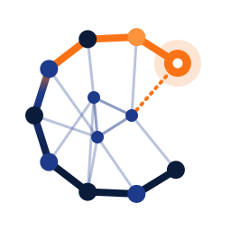

RAG finds similar text. Real questions need connected facts. Same 73 bank PDFs, same LLM, same questions: the only difference is the graph.
Results: 34-question run on 30 Sep 2026, Gemini Flash-Lite (free tier), role CRO. Synthetic data; your results may differ.